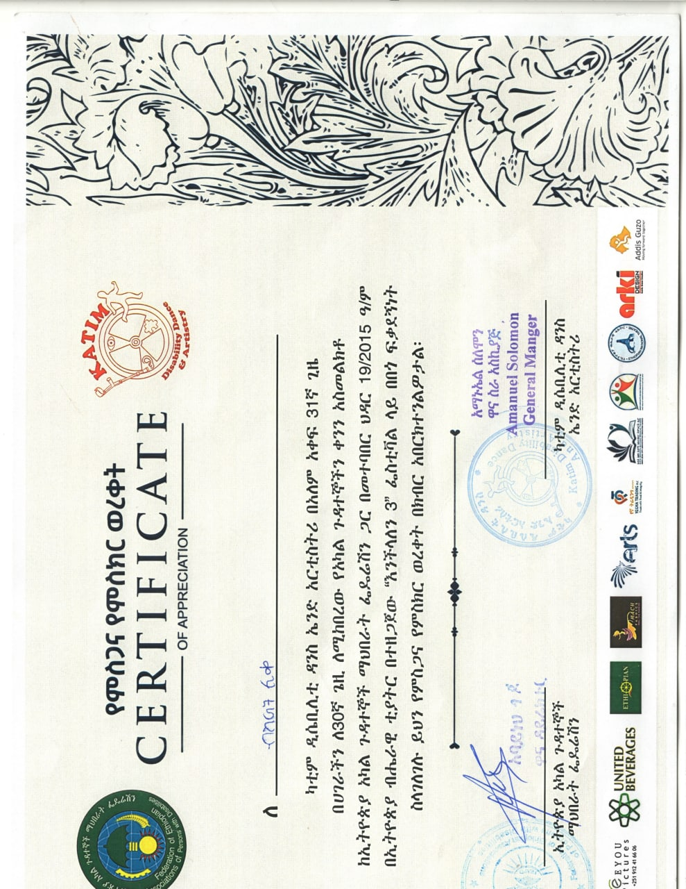

My Hobbies
The Captivating World of Poetry
I am captivated by the mesmerizing art of poetry—both as a creator and a listener.
I also enjoy participating in poem nights. From one of my favorite poets
Laureate Tsegaye Gebremedhin known for his poet book
እሳት ወይ አበባ
, I invite you to listen
"ፈራን"
masterpiece.
Expanding Horizons Through the Written Word
Immersing myself in the vast ocean of literature, I find immense joy in exploring diverse genres of books.
This cherished hobby of mine not only provides endless entertainment but also expands the horizons of my thinking.
Each book I encounter becomes a gateway to new perspectives, ideas, and worlds, allowing my mind to stretch
and wander in delightful directions.
Empowering Change Through Volunteer Activities
Engaging in meaningful volunteer activities is an essential part of my life, allowing me to give back to society
and experience a profound sense of purpose. Participating in diverse volunteer initiatives not only ignites my
passion but also empowers me to create positive change in the world. Through these endeavors, I have had the
privilege of acquiring certifications that validate my contributions.


Hiking and Traveling
Traveling is not just a hobby for me; it is a passion that fuels my desire to explore the world to its fullest extent.
I am driven to immerse myself in diverse cultures, breathtaking landscapes, and extraordinary experiences. With an insatiable
wanderlust, I seek to venture far and wide, embracing the wonders that our planet has to offer.
My Travel History